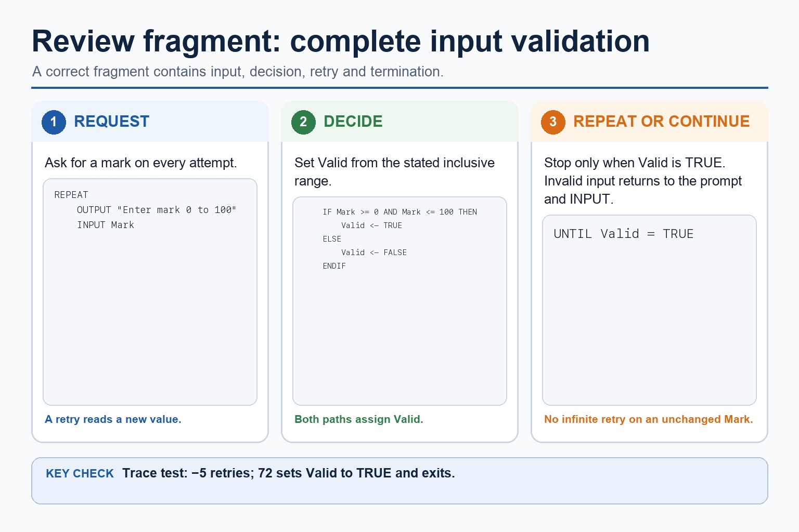
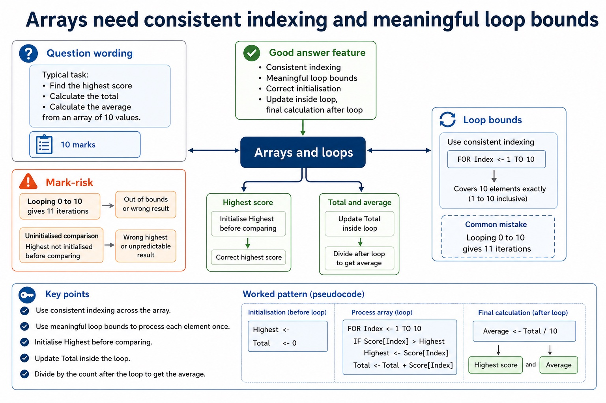

A complete fragment is not a pile of keywords. It is a small program with a job.
This review lesson turns Section 11 skills into complete Cambridge-style pseudocode fragments. A strong answer
reads the scenario, chooses the right constructs, uses meaningful identifiers, handles input sensibly and produces
the required output. Chinese support: fragment 片段, construct 结构, identifier 标识符, review 复习。
Selectthe correct Section 11 tools for a mixed task
Writecomplete program fragments in Cambridge-style pseudocode
Markanswers against strict Cambridge-style points
Inputread required dataINPUT / READFILE
Processselect, loop, calculateIF / FOR / WHILE
Structureuse arrays and modulesFUNCTION / PROCEDURE
Outputshow or write resultOUTPUT / WRITEFILE
Why this matters
Paper 2 mixed questions reward integrated logic: input, control flow, data structures, subroutines and output working together.
Common trap
Students often write isolated lines that do not connect. Marks are earned when variables are initialised, updated, used and output consistently.
Warm-up hook
Which mental toolbox opens first?
Task: “Read 10 marks into an array, count how many are pass marks, then output the count.”
Choose the Section 11 tools needed by the scenario.
Review map
Section 11 tools become stronger when combined
Need
Likely construct
Evidence in answer
Common slip
repeat known number of times
FOR
start, end and NEXT
wrong loop bounds
make a decision
IF
condition, branches, ENDIF
missing ELSE when needed
store several values
array
index used consistently
mixing index bases
reuse logic
function/procedure
parameters and return/output
Java method syntax
Section 11 tools become stronger when combined
Section 11 tools become stronger when combined: source-grounded visual explanation.
Lesson fact: Review map
Lesson fact: Likely construct
Lesson fact: Evidence in answer
Lesson fact: Common slip
Lesson fact: repeat known number of times
Lesson fact: start, end and NEXT
Lesson fact: wrong loop bounds
Lesson fact: make a decision
Lesson fact: condition, branches, ENDIF
Lesson fact: missing ELSE when needed
Lesson fact: store several values
Lesson fact: index used consistently
Fragment anatomy
A complete fragment has setup, logic and result
Pass-count fragment
PassCount <- 0
FOR Index <- 1 TO 10
INPUT Marks[Index]
IF Marks[Index] >= 50 THEN
PassCount <- PassCount + 1
ENDIF
NEXT Index
OUTPUT PassCount
Why it is complete
counter is initialised before the loop
array element is input before it is tested
selection updates the counter only for pass marks
final result is output after the loop
A complete fragment has setup, logic and result
A complete fragment has setup, logic and result: source-grounded visual explanation.
Lesson fact: Fragment anatomy
Lesson fact: Pass-count fragment
Lesson fact: PassCount <- 0
Lesson fact: FOR Index <- 1 TO 10
Lesson fact: INPUT Marks[Index]
Lesson fact: IF Marks[Index] >= 50 THEN
Lesson fact: PassCount <- PassCount + 1
Lesson fact: NEXT Index
Lesson fact: OUTPUT PassCount
Lesson fact: Why it is complete
Lesson fact: counter is initialised before the loop
Lesson fact: array element is input before it is tested
Validation
Review fragments often need input checks
REPEAT
INPUT Mark
IF Mark >= 0 AND Mark <= 100 THEN
Valid <- TRUE
ELSE
OUTPUT "Enter a mark from 0 to 100"
Valid <- FALSE
ENDIF
UNTIL Valid = TRUE
Review fragments often need input checks

Review fragments often need input checks: source-grounded visual explanation.
Lesson fact: Validation
Lesson fact: INPUT Mark
Lesson fact: IF Mark >= 0 AND Mark <= 100 THEN
Lesson fact: Valid <- TRUE
Lesson fact: OUTPUT "Enter a mark from 0 to 100"
Lesson fact: Valid <- FALSE
Lesson fact: UNTIL Valid = TRUE
Arrays and loops
Arrays need consistent indexing and meaningful loop bounds
Question wording
Good answer feature
Mark-risk
10 marks
FOR Index <- 1 TO 10
looping 0 to 10 gives 11 iterations
highest score
initialise Highest before comparing
uninitialised comparison
total and average
update Total inside loop, divide after loop
average inside loop too early
Arrays need consistent indexing and meaningful loop bounds

Arrays need consistent indexing and meaningful loop bounds: source-grounded visual explanation.
Lesson fact: Arrays and loops
Lesson fact: Question wording
Lesson fact: Good answer feature
Lesson fact: Mark-risk
Lesson fact: 10 marks
Lesson fact: FOR Index <- 1 TO 10
Lesson fact: looping 0 to 10 gives 11 iterations
Lesson fact: highest score
Lesson fact: initialise Highest before comparing
Lesson fact: uninitialised comparison
Lesson fact: total and average
Lesson fact: update Total inside loop, divide after loop
Subroutines
Use functions for returned values and procedures for actions
Function
FUNCTION IsPass(Mark : INTEGER) RETURNS BOOLEAN
RETURN Mark >= 50
ENDFUNCTION